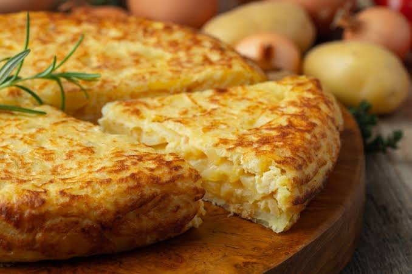

Tortilla de Papas

Ingredientes
- 4 papas medianas
- 1 cebolla
- 6 huevos
- cantidad necesaria de aceite, sal y pimienta
Instrucciones
- Pelamos y cortamos las papas en rodajas, o en la forma que cada uno quiera, hacemos lo mismo con la cebolla
- En una sartén ponemos aceite y volcamos la cebolla y las papas cocinamos hasta que estén bien cocidas
- Una vez que están cocidas volcamos en un bol pero en este paso escurrimos bien el aceite el excedente lo podemos guardar para freír las milanesas que podemos usar para acompañar está tortilla, le agregamos a las papas y la cebolla seis huevos que vamos a romper aparte para evitar que nos toque uno feo y arruine la comida
- A esta mezcla le agregamos sal y pimienta, mezclamos volcamos todo en la sartén y esperamos que el huevo de la base se cocine para poder darla vuelta
- Cuando notamos que está cocida la base,podemos hacerlo con un plato o tapa de una olla, la apoyamos sobre la cocción, retiramos la sartén del fuego y vamos a una pileta a darla vuelta una vez que está bien cocida retiramos del fuego